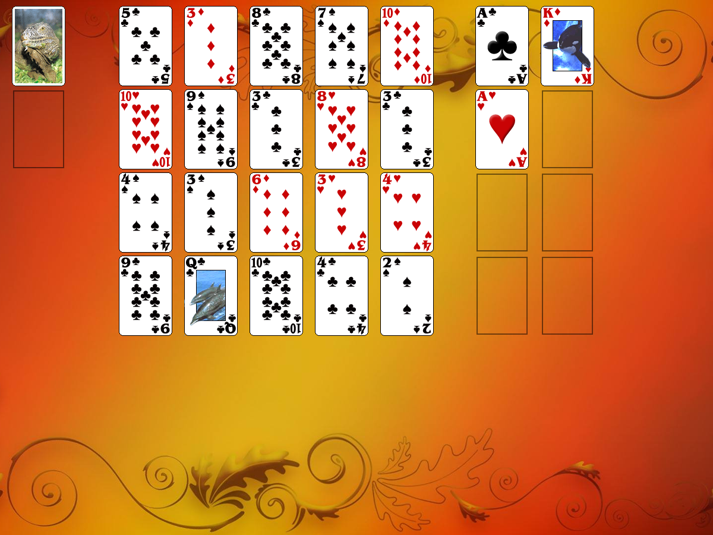

This solitaire uses 104 cards (2 decks). You have 20 tableau piles with one card per pile and 8 foundations.
Aces (one of each suit) are moved to the left four foundations as they become available.
Kings (one of each suit) are moved to the right four foundations as they become available.
The object of the game is: To build the foundation Aces up in suit to Kings, to build the foundation Kings down in suit to Aces.
The rules:The top cards of tableau piles are available for play on foundations. You can move the cards from the waste pile to any tableau pile regardless of suit or rank. Each pile may contain up to 2 cards. Spaces are filled automatically from the waste or the stock piles. Cards cannot be moved from one tableau pile to another.
When you have made all the moves initially available, begin turning over cards from the stock to the waste pile. The top card of the waste pile is available for play on the foundations or the tableau.
